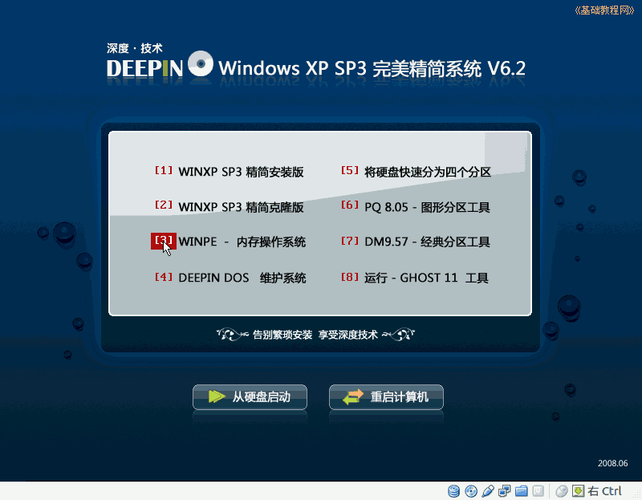

2011-2012 第二学期九年级系统安装教学设计
作者：TeliuTe 来源：基础教程网
四、磁盘分区、格式化 返回目录 下一课
（一）教学设计
1、学习目标：磁盘分区、格式化操作
2、注意事项：按步骤对硬盘进行处理，不要漏了
3、教学过程：
1）教师准备学案和板书；
2）学生整队进入，开机抄黑板上笔记；
3）教师讲解板书演示操作；
4）学生打指法、日志、完成操作；
5）教师打勾记录学生指法成绩，检查日志和操作；
注：学生抄完笔记就开始打指法、日志，老师讲完后再继续完成；
（二）板书设计(学生笔记)
第4课 磁盘分区、格式化
1、打开 Vbox，点“开始”开机运行
2、出来提示框打勾确定
3、进 3 WINPE，右键“我的电脑－管理”
4、磁盘0－右键－新建分区...完成－重启－格式化
5、开始－程序－磁盘工具－PTDD－激活－保存
操作图示：

（三）课后记 2012-03-16 17:24
九年级月考，只能上两个班
剩下的下次再上了，弄的不平衡又麻烦
--
本想着简单的，没想到做完也费了时间
后面3班把前面缺的补一下也可以4班就麻烦些
--
分成三段，进来之前先要求要跟上
不用讲太多，基本养成习惯就好
--
有忘账号登录记密码的，还有上次图标没找着的
解开即可不用太多的要求，弄好即可
--
还是有些急躁，其实也不用那么麻烦
该讲的讲不该讲的不用自己找生气
--
另一个4班的最后一节，来的稀稀拉拉
好多旷课不来，这个也只好这样了
--
上节课也有旷课的，这样讲着就麻烦的
先看别的同学，或者让旁边同学指导补上节课的
--
基本上还算顺利，都可以做出来
然后想起来让把日志写一下
--
七年级剩下的一个班也补上，这样这周的不用拖到下周了
就是连着三节累的有些，还得想想办法放手让学生去弄
--
开始讲学生说都学过，上学期讲日志的时候讲过
然后说小学也学过，就说现在是在这个软件里面学习
--
Lwriter还没有名称，说的时候还有些别扭找不到合适的词语
用蓝色的、writer、黑板上的、第8课的来代替
--
有吵闹的要制止，要不就越来越麻烦最后自己生气
九年级一个玩游戏，拍了下起身跑了，
--
真是够可以的这个班就是以前带生物的时候惯的毛病
只学中考科目，其他都满不在乎
返回目录 下一课
本教程由86团学校TeliuTe制作|著作权所有
基础教程网：http://teliute.org/
美丽的校园……
转载和引用本站内容，请保留作者和本站链接。